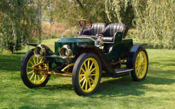
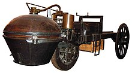

La révolution industrielle qui a changé la face du monde durant les années 1800 a été rendue possible grâce à la maîtrise de la vapeur. Le principe de fonctionnement est fort simple : On fait bouillir de l’eau et la vapeur ainsi dégagée est canalisée vers une machine qui sert, par exemple, à évacuer l’eau des mines ou le minerai lui-même. En fait, déjà au début du XIXème siècle, les applications sont nombreuses. On associe rapidement la vapeur aux bateaux, qui n’attendaient qu’une source d’énergie facilement maîtrisable pour devenirs immenses, et à l’industrie ferroviaire naissante. La première automobile à jamais avoir roulé, le fardier de Cugnot, est mue par la vapeur. Alors que, vers la fin des années 1800, l’automobile se développe de plus en plus, il est naturel de faire appel à la vapeur comme source d’énergie. En 1900, pas moins de 125 manufacturiers américains fabriquent des voitures mues par la vapeur.
C’est ainsi que les jumeaux Francis Edgar et Freelan Stanley fabriquent leur première voiture en 1897 après avoir vendu, à gros prix, leur entreprise de fabrication de plaques photographiques à Eastman Kodak. Dès lors, les frères Stanley vendent les droits de cette voiture à Locomobile. Deux années plus tard, flairant la bonne affaire, les jumeaux reviennent sur le marché de la voiture à vapeur mais cette fois, ils persévèrent et donnent leur nom à l’entreprise. En 1901, donc, débute l’odyssée des Stanley, mieux connues sous le nom Steamer à Newton dans le Massachussetts.

Ce moteur, peu conventionnel, s’avère d’une simplicité technique désarmante. Celui d’une Stanley comporte seulement deux cylindres. Le moteur de la Stanley de M. Darlington développe l’équivalent de 20 chevaux, ce qui est suffisant (selon les normes de l’époque bien entendu!) pour déplacer les 1800 livres (seulement 816 kilos) du véhicule fait principalement de bois. Contrairement aux voitures mues par un moteur à combustion interne qui doit constamment créer de la puissance, une voiture fonctionnant à la vapeur possède toujours une réserve de puissance dans la chaudière. On peut donc dire de ce moteur qu’il est à combustion externe. Avec ce type d’énergie, nul besoin d’embrayage ou de transmission. Le couple maximum est disponible dès que la voiture se met en route. Pour rouler, il suffit de déplacer le levier placé sous le volant vers le haut pour accélérer et vers le bas pour ralentir. On retrouve aussi une pédale de frein, freins dont l’efficacité s’avère très douteuse! Sur la route, le silence de fonctionnement étonne. Outre le "tchick-tchick-tchick" caractéristique de la vapeur (rappelez-vous les trains des films western), aucun bruit n’émane de la voiture. Et le moteur se montre aussi silencieux que doux. Fait à noter, de par leur configuration technique, les véhicules à vapeur sont très performants. D’ailleurs, plusieurs Stanley ont battu des records de vitesse au fil des ans.
Il y a cependant des avantages, comme l'encombrement et le poids du moteur qui sont moindres, excepté la chaudière. Il y a aussi un gain en termes de vitesse et de couple, avec l'économie d'une transmission complexe. La motorisation est également moins bruyante.
Ayant profité de l'avancée technologique sur la vapeur, les automobiles à vapeur ont commencé par être plus performantes que les autres, elles étaient même les plus rapides en 1900. Mais vingt ans après, en 1920, le progrès des moteurs à explosion a rendu obsolète l'usage des automobiles à vapeur.